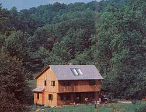
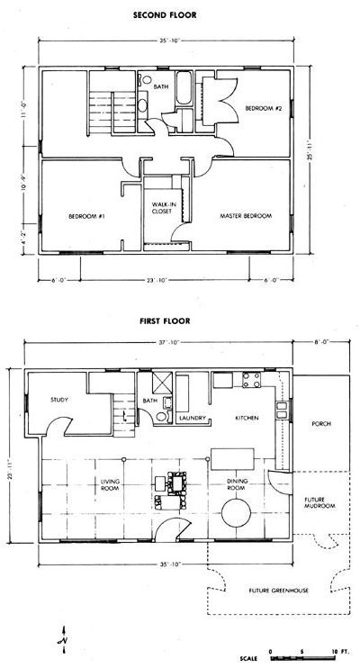
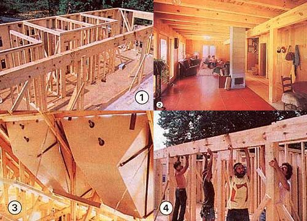

One of MOTHER's staffers trade his typewriter for a tool belt.
Two summers ago, my editor at THE Mother Earth News graciously let me take a onetime "housebuilding sabbatical." I hired a contractor/designer/carpenter and his two-man crew . . . asked MOM's technical experts-and anyone else I could find-lots of questions . . . borrowed ideas from solar houses, consultants, and computer programs . . . and then pitched in to help design and build the passive solar home you see pictured here. It has 1,818 square feet of enclosed floor area, provides solar hot water, burned one and a third cords of wood its first winter (my family's prior residence needed five), and cost $50,000 to build (not including the cost of the property).
Now, let me admit two things right off the bat. First, nobody can rightly say that I built this house. You know the term owner-builder? Well, I was more of an owner-bungler. The three experienced carpenters I worked with are really responsible for the home's clean looks and basic soundness. Me, I spent the summer fetching boards, cleaning up, and making errors typical of a greenhorn carpenter. Still, I did learn a lot-enough that I now feel confident about tackling most of the remaining work myself.
And that statement leads to my second admission: The house isn't complete. Actually, the first floor looks fine (if you ignore the missing baseboards and the scrap-lumber stairs). The upper story, though, has a few shortcomings-in fact, when we moved in, it didn't even have interior walls! (They were framed, wired, and plumbed, but not covered: We called it "the visible house.") I've since nailed up 110 sheets of drywall upstairs, but those gypsum backbreakers still need taping, spackling, sanding, and painting. From there I'll move on to hanging the bedroom doors . . . installing the vinyl floor in the upper bathroom . . . stoning the first-floor chimney . . . converting part of the porch into a mudroom . . . and, well, you get the idea.
Still, it's a good home, even now. All five members of my family love it. And we think it looks attractive, as well.
May I take you on a tour?
Naturally, the Stone home faces south, as do the majority of its windows (114 square feet out of a total of 192). Most of those solar-oriented openings are on the first story. In winter, light streams through these windows and strikes a concrete floor. That thermal sink-consisting of a six-inch slab underlaid with an insulated gravel bed-absorbs solar gain during the day and releases it at night. For aesthetic reasons (and increased heatstoring efficiency), we had the crew that poured the floor work a dark red dye into the top of the wet concrete. Once that slab had cured, we rented a powerful-and initially terrifying-four-wheeled concrete saw and cut shallow grooves in the slab to give the floor the look of 2' X 4' stone tiles. (It's fooled some people, too!)
Actually, we have a "hybrid" floor on the ground level-the back half is of conventional wood construction with a crawl space to provide storage room and access to plumbing. On the winter solstice (December 21), midday sunlight reaches exactly to the bay k of the concrete front section.
Of course, we didn't want sunlight heating the slab in the summer months, so we planned to construct a two-foot overhang to provide summertime shading. Bill McCurdy, my contractor-codesigner (his business is Sunshine Construction, P.O. Box 515, Fairview, NC 28730), suggested that we might as well enclose this overhang by cantilevering the second story, thereby adding 76 square feet of living area to the upstairs-a grand idea.
Other than that, the structure is fairly conventional. We used a simple rectangular design with dimensions in multiples of four feet to save on labor and materials. (The one exception to this rule was the protruding firstfloor study.) The R-25 walls consist of 2 X 6 pine framing faced with insulation board and plywood board-and-batten siding. All junctions were carefully caulked, and a continuous 6-mil polyethylene vapor barrier a as installed.
To give the first floor its open layout, we ran a post-and-beam assembly (of rough-saun, sandblasted 6" X 6" posts and 6" X 12" beams) across the length of the house where the slab and wood floor meet. The open space thus created contains a living room (with walls of 1 X 6 shiplapped cypress paneling), a kitchen (with Sheetrock walls), and a dining room (wainscoted: half paneling and half Sheetrock). Overhead, 4 X 8 joists-spaced every two feet and resting on the front wall, back wall, and central beam-support the 2 X 6 tongue-andgroove boards that serve as both the first-story ceiling and second-story floor.
The windows in the house are doubleglazed casement, crank-operated units made by Hurd Millwork Company (520 S. Whelan Ave., Medford, WI 54451). All but one of these contain Heat Mirror, an interior Mylar-coated film that, by greatly reducing radiant heat loss, gives the windows an R-value of 4.35 (which is about twice as high as conventional double-glazed windows and a third better than even triple-glazed units) . These windows were expensive, but they did save us the cost (and hassle) of using movable window insulation. The first-floor southeast unit does not contain Heat Mirror, since it will be connected to a still-to-be-built solar greenhouse (which will be entered from that still-to-be-built mudroom on the east porch), and we'll want heat to exchange freely between the greenhouse and the main home.
The front (south-facing) surface of the roof has a 12/12 (45°) pitch, allowing the two flushmounted solar water heaters to lie at the optimum sunlight-catching angle for our area. We used Cornell 480s (list price $1,495 each from Cornell Energy, Inc., 4175 S. Fremont, Tucson, AZ 85714). They're commercially made, passive batch heaters-no moving parts! that are guaranteed not to freeze to -40°F. From spring through fall, we can rely on the 480s for all our hot water needs-as long as the weather is sunny. During warm-season cloudy spells, and all through the winter months, the Cornelis prewarm water that's then boosted to "hot" by an electric heater.
We estimate that the two collectors provide 60 to 70% of our hot water, for a saving of about $250 a year. Since Uncle Sam and Aunt North Carolina paid us back a total of 65% of the system's price tag through renewable-energy tax credits, the pair of heaters actually cost us only $1,000 and should thus pay for themselves within four years. And, so far, the collectors have been entirely maintenance-and trouble-free . . . even when the mercury hit -16°F last January! Mind you, that cold did freeze the pipes running across our attic (in spite of their double-layer foam insulation jackets). But since those lines were made of flexible polybutylene, they weren't damaged and worked fine once thawed.
We've been quite pleased with the energy efficiency of the house itself. As I mentioned before, it uses less than a third as much wood heat as our last home (which means I spend less than a third as many fall Saturdays chasing firewood!), and it also seems to distribute heat surprisingly well. I was afraid hot air would rise upstairs and overheat the second floor (my fix for that was"going to be a stairwell door). But so far-perhaps because of the first floor's massiveness and the airholding "wells" created by the big exposed ceiling joists-that hasn't been a problem. I'm still not sure if the heat that does reach the second floor will be evenly distributed. (The distribution was good last winter, but that doesn't count; there weren't any walls!) Too much hot air may go up around the chimney openingin which case, it'll just heat up the master closet! If that happens, I'll have to change the framing around the chimney in the second story to redirect the heat to the hall.
Another concern I've had is air quality. We intentionally didn't build the house up to superinsulation standards. It is still tight, though, so indoor air pollution could be a problem. To help avoid that, we were very careful not to use particleboard or other formalde-hyde-emitting materials . . . we employ electricity (not gas) for cooking and backup water heating . . . and we use our oven vent regularly. And, fortunately, our local concrete generally has a low radon content. I can't really be sure our indoor air is healthful without undertaking expensive tests, but it seems all right as far as we can tell. (We framed in wall openings for two air-to-air heat exchangers during construction, just in case.)
Although our primary reason for using Solarsoft's Sunpas/Sunop computer energy analysis program was to compare design options, the house has used about as much backup wood heat as that program predicted. Speaking of options, the computer told us that our residence would have an SSF (solar savings fraction) of 0.24 with conventional glazing . . . 0.32 with Heat Mirror windows (which cut solar gain some but reduce heat loss more) . . . 0.33 with movable insulation . . . 0.29 with a Trombe wall . . . 0.34 with water walls . . . and 0.57 with an attached solar greenhouse. This last estimate, however, is misleading. It assumes the greenhouse would be used solely as an overgrown solar collector-while I'd expect to return some house heat to the greenhouse on cold nights to keep its plants alive. [EDITOR'S NOTE: One source for computerized design analysis is Southeastern Solar Analysis, P.O. Box 1669, Skyland, NC 28776.]
We've spent just about $50,000 on the house so far (that's after subtracting the $2,000 tax rebate) and have 1,818 square feet of enclosed space. I think another $3,000 of materials-and a good bit of my free timeshould be enough to finish the interior and enclose the mudroom. The grand total would then be 1,908 square feet for $53,000. That works out to a respectable $27.78 per square foot ($16.68 per square foot for materials).
Furthermore, I was fortunate to be able to keep costs down by obtaining my mortgage from my parents. So no lending institution required me to pay for a conventional backup heating system or to completely finish the house. Then too, I give much cost-saving credit to my conscientious contractor.
And, sure, the fact that I worked with the crew for three months also helped lower the home's price tag. But while that strategy knocked a bit off my expenses, it also cut my year's income by a quarter while I was on unpaid leave from MOTHER, so-in strict financial terms-I'm sure I lost money by "hiring" that slow and inexperienced carpenter's assistant . . . me. I can, however, rationalize that cost as my tuition for the carpentry school that taught me the skills I'll need to finish the job.
But if you want to know the truth, I don't care if my "tool belt summer" did cost me money. I wouldn't have missed helping erect our house for the world . . . just as I wouldn't want to miss helping to rear our children.
There are certain experiences in life that you just don't want to let pass you by.
|
 [1] During framing, the slab was covered to protect the dye. [2] Later, it was scored to simulate tile. [3] The solar water heaters are set into the attic, their panels flush with the roof. [4] The crew lifts the central beam |
 |
 |